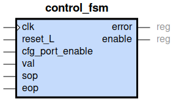
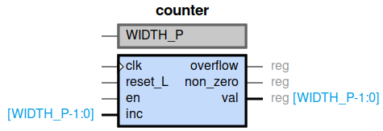
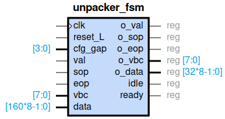
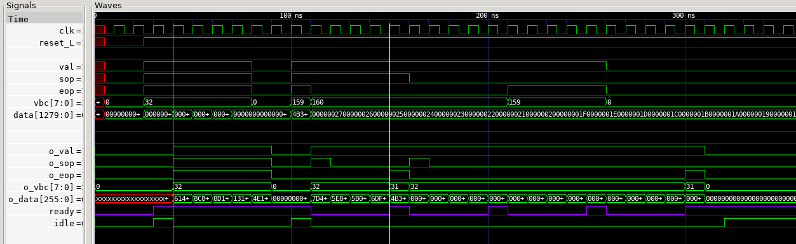
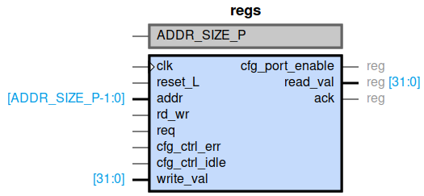
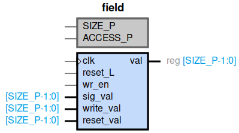
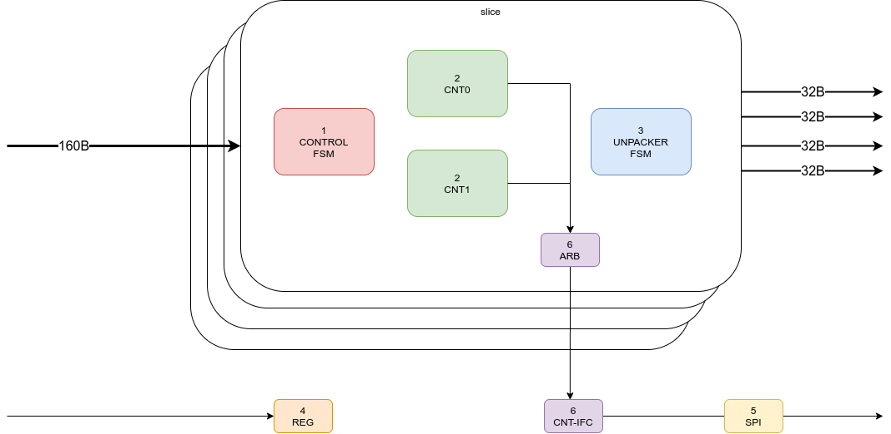

4. Diseño
4.1. Control

4.2. Counter

4.3. Unpacker

Packet: puede ser de tamaño entre 1 - 1024 Bytes.
Para pasar por ifc de 32B o 160B se usan las señales de control sop y eop
El unpacker convierte palabras de 160B a 32B.
1 palabra de 160B equivale a 5 palabras de 32B.
Se utiliza ready para indicar que está en proceso una transacción y que no se pueden procesar datos adicionales.

4.4. Registros


4.4.1. Write
4.4.2. Read
4.4.3. Control
Address: 0x0
ENA: Port enable [0]
ID: Puerto asociado [0]
IDL: Idle [0]
ERR: Error [0]
4.4.4. Counter
Address: 0x1, 0x2
TYP: Tipo de contador 0=paquetes, 1=octetos [0]
CLR: Clear, borrar [0]
IDL: Idle [0]
ERR: Error [0]
4.4.5. Unpacker
Address: 0x3
GAP: Num. ciclos del gap entre palabras
IDL: Idle [0]
ERR: Error [0]
4.5. SPI
4.6. Arb Cnt Ifc
4.7. Chip
